A review of the Astro site in website/, a review of all its text, and four mockup directions. The screenshots below come from the real build: headless Chromium against astro preview at /ardor/, at 1440 x 900 and 390 x 844. The device screens in the mockups are real LVGL captures from pedal-lvgl-ui-screenshots, not HTML copies.
Design read: an overhaul of the marketing and docs site for an open-source hardware project. The audience is the gigging guitarist, then the builder. The language is an instrument panel on a dark stage. Content and URLs stay. Dials: variance 7, motion 5, density 4.
The site has the same problem the pedal had: a narrow value range, almost no color, and one template repeated five times. It also undersells the pedal. Scenes, the Looper, and the drive blocks are not on the homepage.
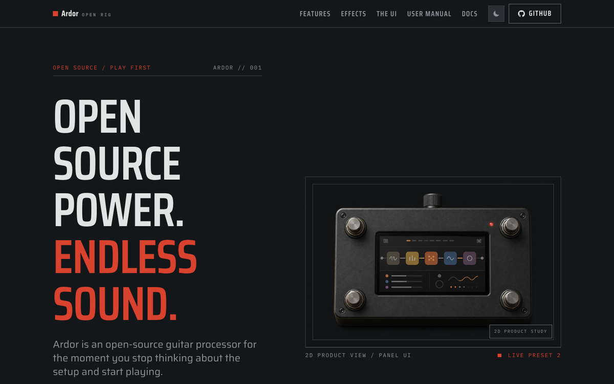
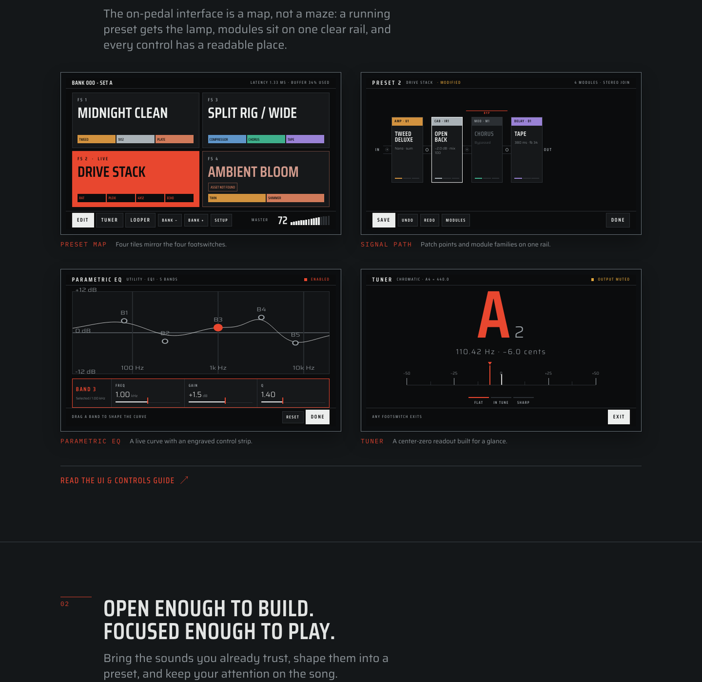
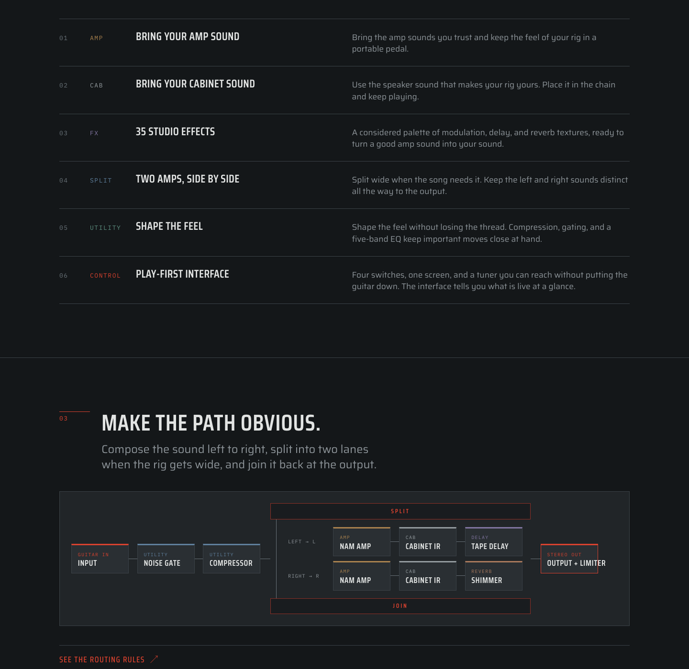
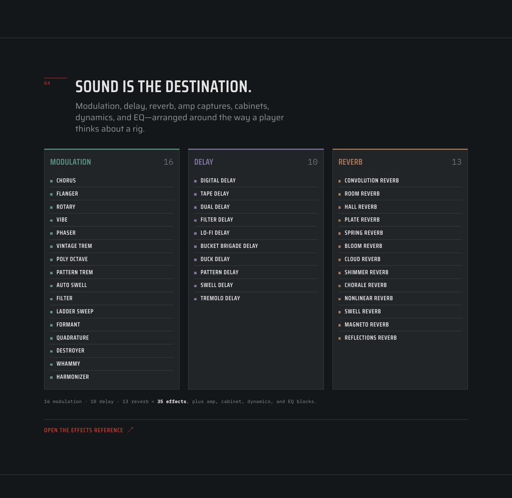
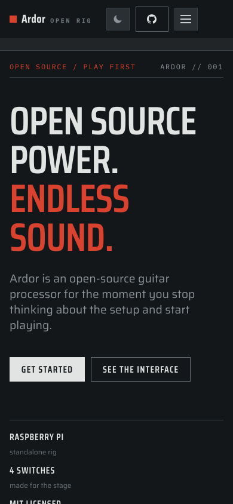
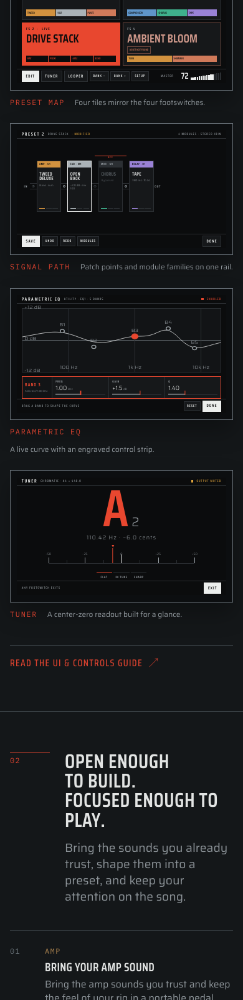
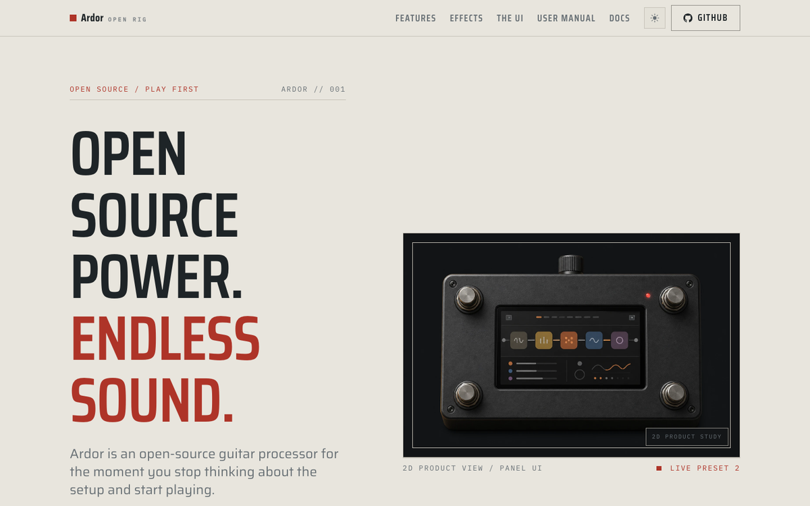
The site still uses the old Slate palette: #141719, #212528, #2a2f33. Nothing is really dark and nothing comes forward. The pedal moved to Lamp Black (#0b0c0d ground, #e8472f lamp) and the site did not follow.
Red appears on two hero words and on small labels. The family colors are desaturated (#5d8f80, #8175a0) and appear only as 3 px borders.
Every section is a "0N" mark, a condensed heading, a grey paragraph, content, and a red text link. The eye never changes pace.
The headline is five lines at 7 rem. At 1440 x 900 the buttons sit at y = 950, below the fold. The image column has 300 px of empty ground above the pedal.
The render shows icon tiles that the pedal UI does not have. The real Lamp Black screens are stronger and true. The mockups put the real preset screen into the render until a photo exists.
Features are six table rows. The effects are 39 rows. The real screens for Scenes, Looper, Dual Rig, and the tuner exist and are not used.
The tagline says "Endless sound." The page has no audio. Dry and wet recordings of one take are in the repository root.
"ARDOR // 001", "2D PRODUCT VIEW / PANEL UI", "LIVE PRESET 2", and "01" to "04" section numbers tell a player nothing.
Fix these in every direction. They are errors, not taste.
The effect counts are wrong. features.ts says 13 modulation, 10 delay, 12 reverb. The homepage and docs/effects.astro say "35 effects". The catalog now has 16 modulation, 10 delay, and 13 reverb. The homepage prints "16 · 10 · 13 = 35", which adds to 39. PRODUCT.md also says 35. Proposal: build every count from effects.generated.json so the text cannot drift again.
The drive blocks are on no page. RAT Distortion, Big Cheese Fuzz, and Tape Machine are in the catalog, but categoryMeta has no drive key, so no page lists them. Ten blocks have no description in effect-copy.ts, for example Transient Shaper, Stereo Widener, GCB-95 Wah, Whammy, and Harmonizer.
The homepage omits real features. Scenes, the four-track Looper, MIDI and expression control, and the wah do not appear on the homepage.
The footer names Neural DSP. "Not affiliated with Raspberry Pi or Neural DSP." The site never mentions Neural DSP. NAM is a separate open-source project. Proposal: "Not affiliated with Raspberry Pi Ltd or the Neural Amp Modeler project."
The effects reference shows raw keys. The Input source default reads "sum" next to the label "L+R Average". Ranges read "models file" and "irs file". The intro reads "13reverb effects".
The user manual shows the old screen. The interactive pedal draws the Slate preset screen (grey tiles, red outline), not Lamp Black.
The latency goal needs its qualifier everywhere. "<10 ms" is a goal, not a measurement. The mockups always print "round-trip latency goal".
The audio demo needs its source. Before the A/B player ships, name the preset and the recording chain for ardor-wet.wav. The WAV files are not in Git now.
The docs are already close to Simplified Technical English: short sentences, one instruction each, active voice. The homepage and the effect descriptions are not. They use metaphors that say nothing concrete, and they repeat themselves.
| Where | Current | Proposed | Why |
|---|---|---|---|
| Tagline | Open source power. Endless sound. | Open-source guitar processor for Raspberry Pi. | "Power" and "endless" are claims with no content. |
| Hero H1 | Open source power. Endless sound. | Play the whole rig from four footswitches. | One concrete instruction, player first. |
| Hero text | Ardor is an open-source guitar processor for the moment you stop thinking about the setup and start playing. | Ardor runs NAM amp captures, cabinet IRs, and 48 built-in effects on a Raspberry Pi. The source is open. | Says what it runs and on what. 20 words. |
| Hero buttons | Get started · See the interface | Get started · Hear it | The second button now leads to sound. |
| New: listen | (none) | Hear it first. One guitar take, recorded dry. Switch to the Ardor output while it plays. | A guitarist judges with ears. |
| Interface | See what's live before you touch it. The on-pedal interface is a map, not a maze: a running preset gets the lamp… | Read it from standing height. The live preset fills with red. Each tile shows its chain in family colors. The four tiles match the four footswitches. | Replaces the metaphor with what the player sees. |
| New: scenes | (none) | Four sounds in one preset. Scenes change values inside one preset. The audio engine does not reload. | A real feature with a real screen. |
| New: looper | (none) | A four-track looper at your feet. The first loop sets the length. Each new layer starts on the loop boundary, so the layers stay in time. | A real feature with a real screen. |
| Chain | Make the path obvious. Compose the sound left to right, split into two lanes when the rig gets wide… | Build the chain from left to right. Add drive, amp, cabinet, and effect blocks in the order you want. Split into two lanes for a stereo rig. | One instruction per sentence. |
| Amp + cab | Bring your amp sound. Bring the amp sounds you trust… Bring your cabinet sound. Use the speaker sound that makes your rig yours. | Use the tones you already own. Load Neural Amp Modeler captures and cabinet IRs in the browser manager. Ardor includes no third-party captures. | One section instead of two that repeat. Names the formats. States the limit. |
| Effects | Sound is the destination. Modulation, delay, reverb, amp captures, cabinets, dynamics, and EQ—arranged around the way a player thinks about a rig. | 48 effects in five families. Each family has one color, on the pedal and in the manager. | A true count, no em dash, a concrete fact. |
| Feel | Shape the feel. Shape the feel without losing the thread. | (merged into the effects families) | Title and text repeat. "The thread" is a metaphor. |
| Close | Build the rig that follows you. Ardor is MIT-licensed. The software, touch interface, manager, and enclosure files are open… | Every layer is open. The DSP engine, the touch UI, the preset format, the enclosure files, and the firmware image are MIT-licensed. Build it, change it, and send your changes back. | The positioning claim from PRODUCT.md, stated as fact. |
| Nav | Features · Effects · The UI · User manual · Docs | Listen · Interface · Effects · Manual · Docs | Labels match the section headings. Anchors #features, #effects, #interface stay. |
effect-copy.ts)These use slang, long noun clusters, and five em dashes. Proposed pattern: what the block is, then what it does to the sound.
Keep their structure and voice. Small fixes: use the product term "lanes" instead of "horizontal paths", use one case for page names ("User manual" and "User Manual" both appear), and remove the 16 em dashes in the built HTML.
All four use the same proposed copy, the same page order (except where noted), the real device screens, and a working A/B player with the real recordings. The difference is the visual language. Each page works at phone width and respects reduced motion.
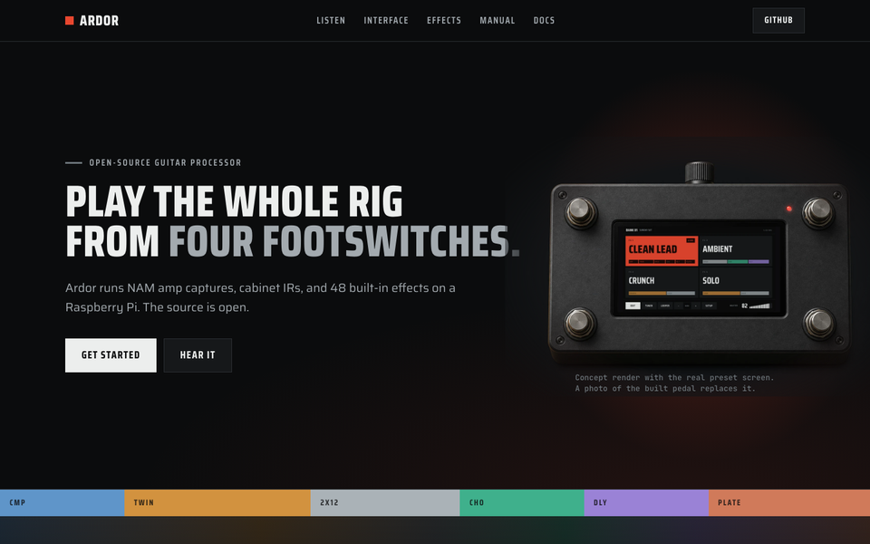
The device language on the web. Near-black ground, saturated family colors, and a strict One Lamp Rule: red means live, nothing else. The A/B player is a preset tile. It floods with red when you hear Ardor. Effects look like the module drawer.
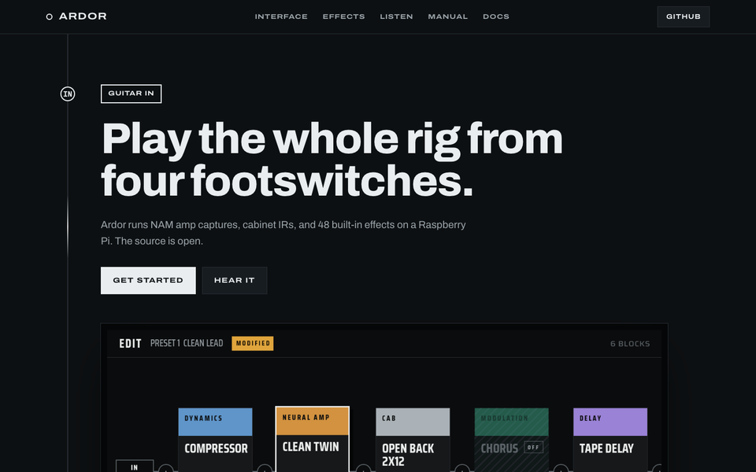
The page is a signal chain. One rail runs down the page. Each section is a block with a family-color header, from Guitar in to Stereo out. A node lights when you reach it. The page ends at the output, where you hear the result.
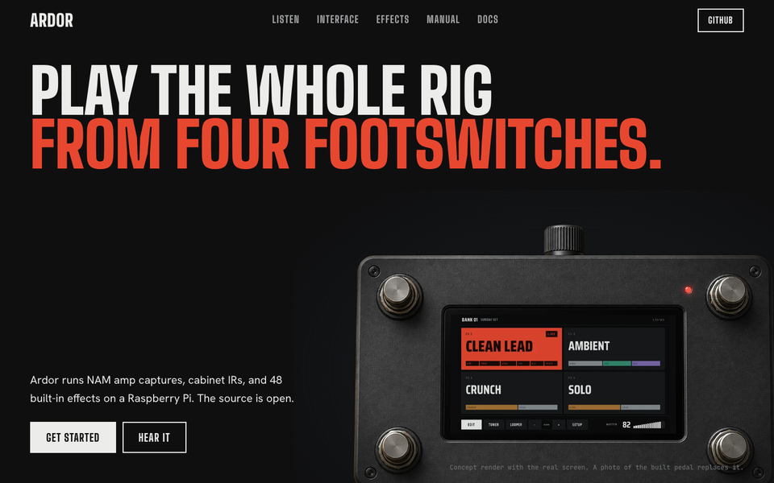
A gig flyer. Very large condensed type, the pedal pushed into the headline, one full-width red block where the words DRY and ARDOR are the switch, edge-to-edge screens, and one marquee of effect names. Red is poster ink here, so it breaks the One Lamp Rule on purpose.
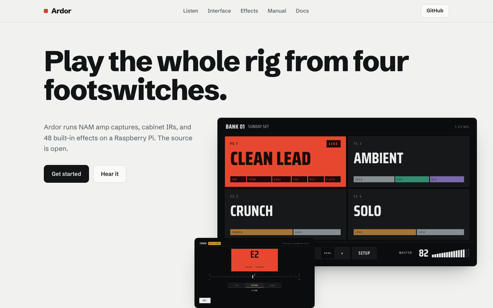
Light first and calm. Cool paper ground, the device screens as dark objects with real shadows, a sticky text column beside the screens, and a typographic effects index. It reads best for long docs pages. It needs a dark mode to keep the stage mood.
#features, #effects, #interface.My recommendation: direction 1, Lamp Black. It fixes every point in the audit, it carries the pedal language that you already chose, and it is the lowest risk for the docs pages. If you want the biggest change, take direction 3. Parts can also move between directions, for example the full-width red listen block from direction 3 or the lit signal rail from direction 2.